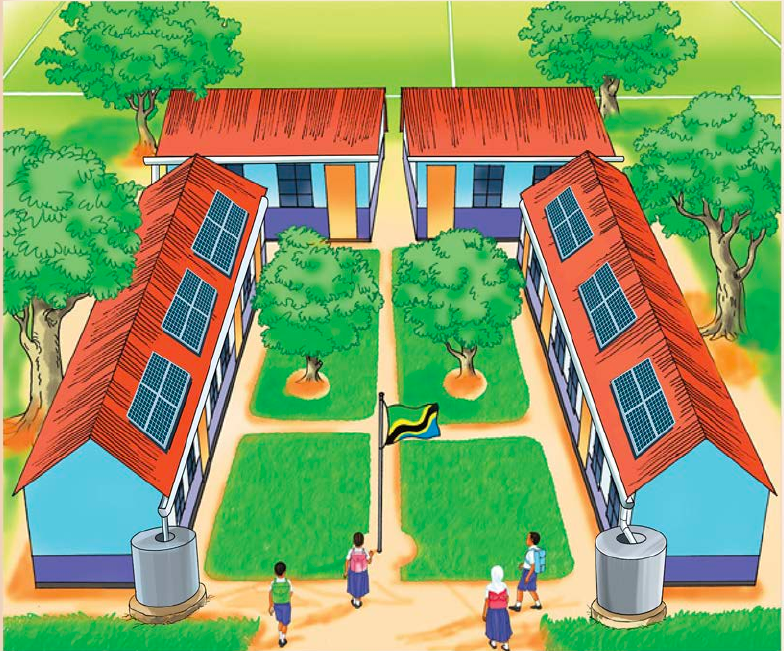

Activity 2
Listen to the audio description of Figure 4 or observe Figure 4, then answer the questions that follow.

Questions
1. What are the things found in the school environment?
2. What essential things, if removed from the school environment presented in Figure 4, would affect that environment? Give reasons.